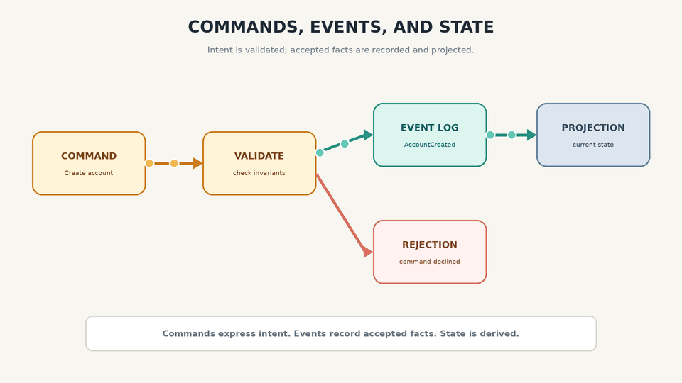

What the Stream? Phase 05
Event Sourcing, Commands, and Immutable Events
Event Sourcing
Event sourcing stores changes to application state as a durable log of domain events. This is different from Change Data Capture. With CDC, changes to a mutable source database are captured from its transaction log or an equivalent change feed. The feed preserves the ordering guarantees provided by that source, often transaction order or per-partition order.
In event sourcing, the events themselves are the authoritative facts. The logical event history is append-only: published events are not modified in place, and corrections are represented by later events. Physical retention, redaction, or deletion may still be required by the system or by regulation.
Events record accepted domain facts, and application state is derived from those events. A database or durable log with the required ordering, retention, and concurrency guarantees can serve as the event store; EventStoreDB is one example.
Deriving Current State from the Event Log
An end user is generally interested in the current state of the application rather than every change that brought it there. We therefore need a deterministic process that reads the event log and derives the current state. If we replay the same accepted events in the same order, we should reach the same state.
An event-sourced log can reconstruct current state by replay. A CDC feed can do this only when it includes an initial snapshot or complete retained history, including deletion information.
In a compacted CDC topic, the latest value for each key—and any tombstone representing deletion—can be retained while older versions are removed. Event-sourced events have a different role. They represent facts in the domain, and their historical meaning can remain important even after the current state changes.
Snapshots can reduce replay cost. We can load a snapshot and replay only the events that occurred after it. A snapshot improves recovery speed without automatically removing the historical event log. Whether old events must be retained indefinitely is a system and compliance decision.
Commands and Events
It is very important to distinguish a command from an event.
A command represents intent. When a user asks to create an account, reserve a seat, or transfer money, the request may be rejected after checking business invariants. If the command is accepted, the command handler produces one or more events representing facts that occurred.
For example, a username may need to be unique before an account can be created. Once validation passes, the accepted command can emit an AccountCreated event. The command does not become the event; it causes the event to be recorded.
Once an event is recorded, it becomes a fact. In an online flight booking system, a cancellation does not erase the fact that a reservation was made earlier. The cancellation becomes another event.
Business invariants that decide whether a command is accepted must be checked before recording its events. Consumers may still reject, quarantine, or retry malformed and unsupported events.

State, Streams, and Immutability
The principle of immutability is what makes event sourcing and change streams powerful, but application state still changes. Available seats are the result of reservations and cancellations. A bank balance is the result of credits and debits.
The key is that state is the result of events applied over time. Even when an operation is later reversed, the fact that it occurred remains useful for recovery, audit, and analysis.
Application state is what we get when we integrate an event stream over time. A change stream is what we get when we differentiate state over time.
The mutable state and the immutable history do not contradict each other. They are two representations of the same system: one answers “What is true now?” and the other answers “What happened?”